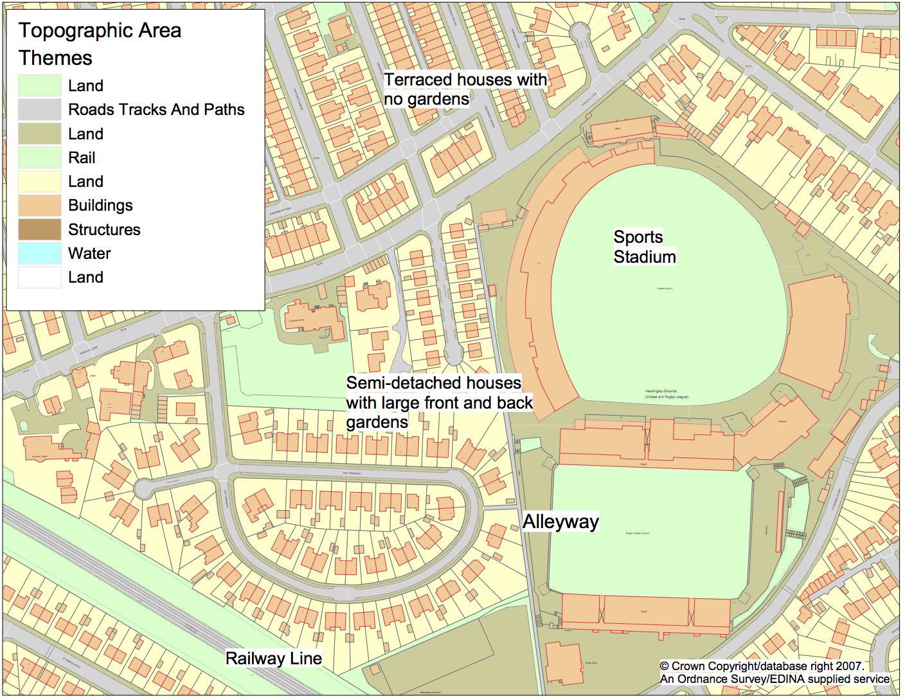

DWP Sparkle Talk
Simulating Society with Agent-Based Modelling and Microsimulation
Nick Malleson
University of Leeds, UK
n.s.malleson@leeds.ac.uk
Slides available at:
https://urban-analytics.github.io/dust/presentations.html
Overview
Introduction to ABM
ABM Example: Simulating daily mobility
Introduction to Microsimulation
Microsimulation examples
Simulating implications for tax policies
Future ageing
Discussion

Introduction to ABM
Aggregate v.s. Individual
'Traditional' modelling methods work at an aggregate level, from the top-down
E.g. Regression, spatial interaction modelling, location-allocation, etc.
Aggregate models work very well in some situations
Homogeneous individuals
Interactions not important
Very large systems (e.g. pressure-volume gas relationship)
Introduction to ABM
Aggregate v.s. Individual
But they miss some important things:
Low-level dynamics, i.e. “smoothing out” (Batty, 2005)
Interactions and emergence
Individual heterogeneity
Unsuitable for modelling complex systems

Introduction to ABM
Systems are driven by individuals
(cars, people, ants, trees, whatever)
Bottom-up modelling
An alternative approach to modelling
Rather than controlling from the top, try to represent the individuals
Account for system behaviour directly
Autonomous, interacting agents
Represent individuals or groups
Situated in a virtual environment

Attribution: JBrew (CC BY-SA 2.0).
Why ABM?
Emergence
"The whole is greater than the sum of its parts." (Aristotle?)
Simple rules → complex outcomes
E.g. who plans the air-conditioning in termite mounds?
Hard to anticipate, and cannot be deduced from analysis of an individual
ABM uses simulation to (try to) understand how macro-level patterns emerge from micro-level behaviours
Why ABM?
Better Representations of Theory
Example: Crime theories emphasise importance of ...
Individual behaviour (offenders, victims, guardians)
Individual geographical awareness
Environmental backcloth

Why ABM?
Better Representations of Space
Micro-level environment is very important
Can richly define the space that agents inhabit
More Natural Description of a System
Describe the entities directly, rather than using aggregate equations

Why ABM?
History of the Model Evolution
Rather than returning a single result, the model evolves
The evolution itself can be interesting
Analyse why certain events occurred

Modelling agent behaviours
Many behaviours are hard / impossible to model
Choose those that are the most important. Cannot include everything!
Some can be very simple - e.g. threshold-based rules (Kennedy, 2012)
IF hunger IS ABOVE hunger_threshold THEN search_for_food
OTHERWISE do_something_else
These are the most common (Birks et al. 2012, 2013; Dray et al. 2008; Groff 2007a,b; Hayslett-McCall, 2008)
More advanced cognitive frameworks exist
Beliefs, Desires, Intentions (Bratman et al., 1988)
PECS (Schmidt, 2000).
ABM Predictive Example
Awareness space test
Agent-Based Modelling - Difficulties

(actually he played with his trains...)
Tendency towards minimal behavioural complexity
Stochasticity
Computationally expensive (not amenable to optimisation)
Complicated agent decisions, lots of decisions, multiple model runs
Modelling "soft" human factors
Need detailed, high-resolution, individual-level data
Individual-level data
ABM Example:
Simulating Urban Mobility
Motivation: better models of daily urban dynamics by combining diverse data and simulation
Simulating Urban Flows (surf) and Data Assimilation for Agent-Based Modelling (dust) projects
Crols, T., and N. Malleson (2019) Quantifying the Ambient Population Using Hourly Population Footfall Data and an Agent-Based Model of Daily Mobility. GeoInformatica DOI: 10.1007/s10707-019-00346-1.
Malleson, N., K. Minors, Le-Minh Kieu , J. A. Ward , A. West and A. Heppenstall (2020) Simulating Crowds in Real Time with Agent-Based Modelling and a Particle Filter. Journal of Artificial Societies and Social Simulation (JASSS) 23 (3). http://jasss.soc.surrey.ac.uk/23/3/3.html DOI: 10.18564/jasss.4266
Simulating Urban Mobility
Wi-Fi footfall counters. Case study: Otley, West Yorkshire


Simulating Urban Mobility
Simulating Urban Mobility: Results 1

Simulating Urban Mobility: Results 2
Next steps: real-time calibration

Data Assimilation for Agent-Based Modelling (dust.leeds.ac.uk)
Microsimulation v.s. ABM
Confusing terminology!
(Spatial) Microsimulation (aka 'Synthetic Population Generation')
"merging of census and social survey data to simulate a population of individuals within households" (Ballas et al., 2018).
Dynamic Microsimulation
Microsimulation plus time (O'Donoghue, 2018).
Simulate the behaviour of micro-units over time
Microsimulation v.s. ABM
So what is the difference?
Arguably comes down to interactions
If the individual units can interact, then it's an ABM
If they can't interact, then it's a microsimulation
Also, microsimulations tend to be empirical. ABMs can be abstract / hypothetical / thought experiments.
But, on the whole, not particularly important what you call your model
Microsimulation Example 1:
Future Elderly Model (FEM)
Background: understanding population ageing is key for planning health and welfare systems
English Longitudinal Study of Ageing (ELSA)
Markov microsimulation model
Generates input populations and transition probabilities from ELSA
Projects the population forward in time
Estimates disease prevalence and economic outputs
Scenario investigation through modification of transition probabilities
Luke Archer, Nik Lomax, Bryan Tysinger (in press)
Microsimulation Example 1:
Future Elderly Model (FEM)
Prevalence of lung disease in a reduced smoking scenario
Future work:
assess the burden of chronic disease
evaluate the impact of early life experiences on later-life health
investigate the relationship between socio-economic factors and the quality and quantity of life
quantify the potential impact for interventions targeting key risk factors
Microsimulation Example 2
Simulating Tax Policies
Old, Single and Poor: Using Microsimulation and Microdata to Analyse Poverty and the Impact of Policy Change among Older Australians (Tanton et al., 2009)
Creates a synthetic population using national census and smaller surveys
Examines national, spatial impacts of pension age change on older, single individuals
Microsimulation Example 2
Simulating Tax Policies
Summary
Introduction to ABM
ABM Example: Simulating daily mobility
Introduction to Microsimulation
Microsimulation examples
Simulating implications for tax policies
Future ageing
Now: discussion & questions
DWP Sparkle Talk
Simulating Society with Agent-Based Modelling and Microsimulation
Nick Malleson
University of Leeds, UK
n.s.malleson@leeds.ac.uk
Slides available at:
https://urban-analytics.github.io/dust/presentations.html